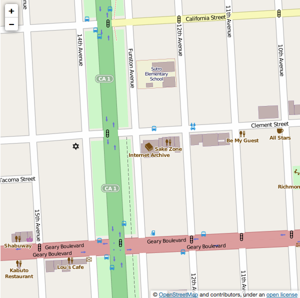

Internet Archive
If you have questions, please check our:
If you cannot find your answer in the resources above, please email info@archive.org(Please enable email from @archive.org if you use any filtering devices!)
To make a donation:
Also available:
Parking:
There are free, 2-hour street parking spots on Funston and the surrounding streets as well as metered parking on Clement. For a map of all-day, paid lots in the area: Parking Map
Mass Transit Within San Francisco
Our area is served by San Francisco MUNI bus routes. The following links listed below will take you to the different MUNI routes; please select the most convenient route, click to see the schedule & map. 511 Trip Planner is also a useful resource
1 - California: Inbound toward Downtown. Outbound toward Richmond district. Board at Davis St & Pine St. Ask the driver to let you off at the corner of California St. & Park Presidio Blvd. Turn left on Park Presidio Blvd. toward Geary Blvd. Turn left at Clement St., turn right at Funston Ave. Destination will be on the left.
1AX - California 'A' Express: Inbound toward Financial district for morning rush hour. Outbound toward Outer Richmond district for afternoon rush hour. Get off at the corner of California St. & Park Presidio Blvd. Turn left on Park Presidio Blvd. toward Geary Blvd. Turn left at Clement St., turn right at Funston Ave. Destination will be on the left.
1BX - California 'B' Express: Inbound toward Financial district for morning rush hour. Outbound toward Outer Richmond district for afternoon rush hour. Get off at the corner of California St. & Park Presidio Blvd. Turn left on Park Presidio Blvd. toward Geary Blvd. Turn left at Clement St., turn right at Funston Ave. Destination will be on the left.
38R - Geary Rapid: (same directions as a Route 38, but this route has limited bus stops, and it is faster). Ask the driver to let you off at the corner of Geary Blvd. & Park Presidio Blvd. Head east on Geary (towards downtown) and turn left at Funston Ave. Destination will be at the end of the block on the right.
38 - Geary: Ask the driver to let you off at the corner of Geary Blvd. & Park Presidio Blvd. Head east on Geary (towards downtown) and turn left at Funston Ave. Destination will be at the end of the block on the right.
28 - 19th Ave: Ask the driver to let you off at the corner of Geary Blvd. & Park Presidio Blvd. Head east on Geary (towards downtown) and turn left at Funston Ave. Destination will be at the end of the block on the right.
From the south bay on CalTrain: Board the bus route #30 on Townsend St. & 4th St. Depart at 3rd St. & Market St. Then board bus route # 38 or #38R on Geary Blvd & Kearny St. Ask the driver to let you off at the corner of Geary Blvd & Park Presidio Blvd. Head east on Geary (towards downtown) and turn left at Funston Ave. Destination will be at the end of the block on the right.
From BART, get off at Montgomery Street station and take the 38 Geary (see above)
Driving From the North Bay
There is metered parking on Clement and 2-hour parking on Funston and parallel avenues (please also note street cleaning times).
Driving From the East Bay
There is metered parking on Clement and 2-hour parking on Funston and parallel avenues (please also note street cleaning times).
From the South Bay via Highway 280
There is metered parking on Clement and 2-hour parking on Funston and parallel avenues (please also note street cleaning times).
From the South Bay via Highway 101
There is metered parking on Clement and 2-hour parking on Funston and parallel avenues (please also note street cleaning times).